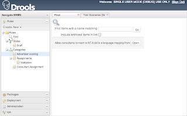
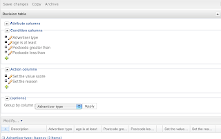
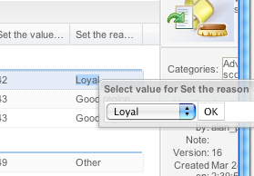
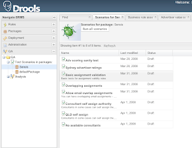

BRMS for Drools 5
Also: Introducing Guvnor.
Guvnor is the new name for the BRMS. The term BRMS kind of has an industry meaning that is slightly different from what we call the Drools BRMS (when we say it, we mean the repository and web tools mostly). Hence, the name Guvnor (kind of related to governance – but really, it just sounds cool). On top of that, we are extending guvnor to manage other asset types – which aren’t directly related to rules (but that’s another story, for another day).
Anyway, the new look guvnor:

Hopefully, we will have snapshots and milestones available for this very shortly.
Here is a quite tour of some of the more interesting features:
1. Web based decision tables:
This is obviously quite different from the spreadsheet based ones, and use a similar approach to the guided editor to help you set up the table to allow people to enter rule data.
The columns are configured just so:

You can also configure lists of values, or use data driven enumerations (just like before):

You can of course mix and match this with other rule types, as not everything is easy to represent in decision tables.
The most interesting feature (to me) is the integrated testing UI. I am a big fan of test driving anything. So, you can do that with rules. You can specify what you expect your results to be for a given scenario. You can narrow that scenario to an individual rule, if you want, or you can exclude rules (you would want to do this if a particular rule had a destructive side effect). You can also simulate dates for checking date effective rules etc.
This sort of scenario based expectation testing works well when your rules focus on the data and the logic on the data, and avoid programmatic logic and external side effects, of course.
What a scenario looks like:
 You can see the expectations (which has one failure in this case) and the input data.
You can see the expectations (which has one failure in this case) and the input data.
Also, you can treat a list of scenarios as a test suite: 
And then run it to get unit test like green/red bars (well all love seeing green !):

From this we can also see what percentage of rules were exercised (and thus increase our confidence that we almost know what we are doing !).
I demonstrated this in Melbourne last week, and this really helped clarify to people what it was all about.

{kind=link}
{kind=link}
{kind=link}
{kind=link}
{kind=link}